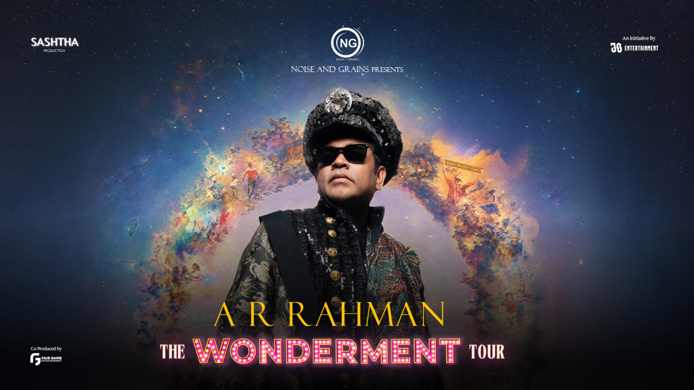

The Wonderment Tour | A.R. Rahman Live in Chennai
📅 Sat, 14 Feb • 6:30 PM
📍 JN Stadium, Chennai
Starts from
₹1,799
About the Event
Experience the magic of AR Rahman live with Wonderment - The Tour. Step into a world of awe and enchantment as the legendary composer brings a groundbreaking musical experience to cities across India.
Wonderment is more than a concert—it's an artistic odyssey celebrating the beauty of life, love, and music. Immerse yourself in a symphony of emotions, where every note, every visual, and every heartbeat connects you to the wonder of it all.
Event Guide
- Language: Tamil
- Duration: 3 hrs 15 mins
- Entry: Tickets needed for 5 yrs & above
Artist

A.R. Rahman
Music Composer & Producer
Venue
Jawaharlal Nehru Stadium
Raja Muthiah Rd, Periamet, Chennai, Tamil Nadu 600003